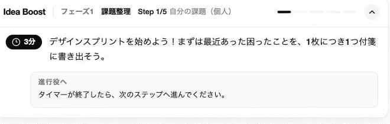
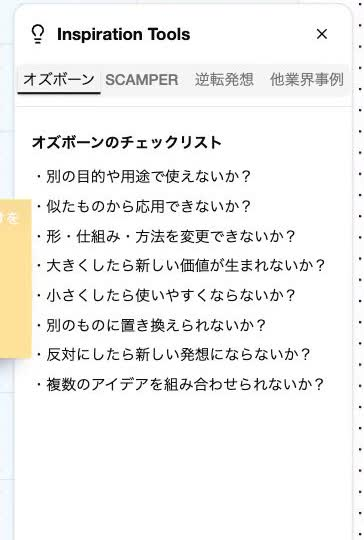

考える人
「何を考えればいい？」
チームで考え、決めるWebアプリ
はじめてでも、
チームで一案を。
エンジニアファースト

初めてのハッカソン。4人の想定ストーリー。
A考える人
「何を考えればいい？」
B進める人
「どうまとめればいい？」
小さなタスクを
忘れてしまう
もっと簡単に
見える化できる？
今日のタスクだけ
表示する
デモの例
例えば、このチームから「小さいタスクを忘れてしまう」という困りごとが出たとします。 最初にするのは、いきなりアプリを考えることではなく、どの困りごとに取り組むかを決めることです。 次に、選んだ課題を「どうしたら、もっと簡単にタスクを見える化できる？」という問いに変えます。すると、4人が考える方向がそろいます。 最後に、その問いへのアイデアを比べ、「今日やる小さなタスクだけを表示する」のような一案を選びます。 この三段階を、デザインスプリント形式で進めます。実際のワークは推奨時間の合計で約78分。次の動画では、その操作の流れを2分にまとめています。操作の再現デモ · 2分
ルーム準備から、個人ワーク、共有、投票、問いの作成、アイデア決定までの操作を再現した動画です。
動画を読み込めませんでした。HTMLと同じフォルダにdemo2.mp4があるか確認してください。動画ファイルを開く
書いている間は、本人だけ。4人の例
↓自分で共有

投票中は、自分の票だけ。
最後は、チームで決める。
4人から案が出たら、今度は「どれにする？」で迷います。「楽しそう」だけで選んでも、作れないかもしれません。作りやすさだけで選んでも、やりたい気持ちが残らないかもしれません。 そこで、価値と実現可能性の二軸に案を置き、同じ視点で比べます。そのうえで、好き、やってみたいという気持ちで選ぶ一票と、比較してよいと思う三票を使います。 投票中は、他の人の票を見せません。先に集まった票に流されず、自分で選ぶためです。 結果を見ながら「私はここに価値を感じた」「この範囲なら作れそう」と話し合う。票が多い案を自動的に答えにせず、チームで一案を決めます。選んだ理由も、一緒に持てるようにしたいのです。「減らす」というヒント
全部を管理→今日だけにする

Miro・FigJam
ChatGPT
Idea Boost
私たちが目指す体験
01
02
03
実際の利用・効果の検証はこれから。
最初の4人のチームに戻ります。何を作るか分からなかった人たちが、最後に「意見を出せた」「理由を話せる」「作ってみたい」と思える。 誰かが出した案も、一緒に考え、比べ、選ぶ時間を通して、「私たちの案」になっていく。私たちが届けたいのは、そんな体験です。 Idea Boostは、まだ実際には使われていません。この変化が起きるかは、これから確かめていきます。 初めてのチームでも、納得して一案を選ぶところまで進める。それを目指して作っています。Idea Boost ↗
アイデアは、もっと自然に。
エンジニアファースト